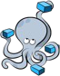
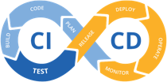

06 79 62 94 60
06 79 62 94 60 contact@gillescobigo.com
contact@gillescobigo.com in/gillescobigo/
in/gillescobigo/ Mont de Marsan 40
Mont de Marsan 402025/2026
Baticoop
Conception et développement d'un outil de gestion de travaux. User story, maquettes, création de pages et de composants sous React, développement du backend avec Node.js et Express.

Ancien BIM Manager chez Bouygues Construction, j'ai passé 10 ans à coordonner des projets complexes dont l'extension en mer de Monaco. Ce que j'aimais dans ce métier : comprendre un système dans sa globalité avant d'intervenir dessus. C'est exactement comme ça que j'aborde le développement aujourd'hui. Je construis Cerithe, un carnet de santé numérique du bâtiment, from scratch. Chaque décision technique est réfléchie, chaque choix d'architecture est défendu.
 Compétences techniques
Compétences techniques
Back-end Express
Express Nest.js
Nest.js Front-end
Front-end React
React Tailwind
Tailwind BDD
BDD

Docker Git
Git Vercel
Vercel Render
Render Jest
Jest Cypress
Cypress
 Expériences professionnelles
Expériences professionnelles2025/2026
Baticoop
Conception et développement d'un outil de gestion de travaux. User story, maquettes, création de pages et de composants sous React, développement du backend avec Node.js et Express.
2024/2026
Freelance
Sites WordPress : conception UI/UX, intégration front-end et déploiement complet (o2switch, SSL, gestion DNS) pour des sites e-commerce, site vitrine et blog, scraping d'évènements sportifs, ... Liste présente sur mon site gillescobigo.com
2024
ChouxFleurs
App Web Python/Flask : premier projet personnel en autodidacte. Système de pronostics avec algorithme de pondération de scores et gestion d'une liste de naissance interactive. API MongoDB, Wasabi S3.
2022/2026
Cerithe
Carnet de santé numérique du bâtiment : à l'origine de ma reconversion. Construit from scratch en TypeScript, Node.js, React, Prisma. MVP prévu juillet 2026
2017/2021
BIM Manager - Bouygues
Structuration & synchronisation de jeux de données massifs (Extension en mer de Monaco : 100+ modèles interconnectés, TPR2). Automatisation des protocoles d'échanges afin de garantir l'intégrité des maquettes BIM.
2011/2016
EP - Analyste bâtiment et rénovation
Conseil, analyse et gestion de projets de rénovation énergétique. Modélisation de données, création d'outils, paramétrage Salesforce. Formation et accompagnement.
 Formation
Formation Centres d'intérêt
Centres d'intérêt Handball (16 ans)
Handball (16 ans) Guitare (8 ans)
Guitare (8 ans) Entraineur de -16 ans (3 ans)
Entraineur de -16 ans (3 ans) Piano (2 ans)
Piano (2 ans) Triathlons
Triathlons Théâtre
Théâtre Padel (2 ans)
Padel (2 ans) Échecs
Échecs